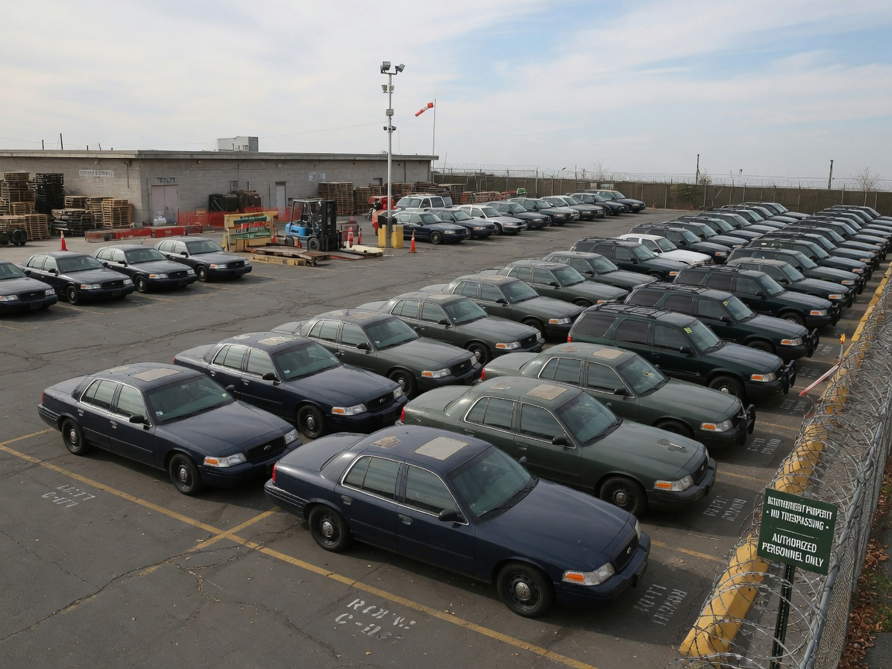
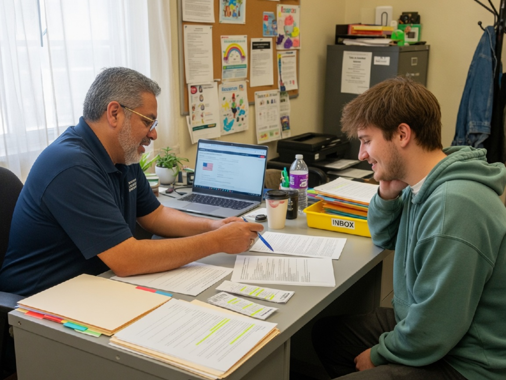

Legislation
Pass priority law
Secure Texas statute or administrative rules that put eligible foster youth first for surplus state fleet vehicles — following the Louisiana HB 575 model.
Prioritize surplus state vehicles for foster youth who need reliable transportation to school, work, and independence — and build a clear pathway from eligibility to keys in hand.
Reliable transportation is a practical foundation for life after care. This campaign advances a Texas program — based on Louisiana House Bill 575 — that gives foster youth priority status when surplus state vehicles become available.
Secure Texas statute or administrative rules that put eligible foster youth first for surplus state fleet vehicles — following the Louisiana HB 575 model.

State agencies already retire and redistribute vehicles. Priority for foster youth turns an existing public inventory into a second-chance tool for independence.
Eligible youth get a real pathway to safe, reliable transportation for college, work, medical appointments, and aging out of care successfully.
Louisiana House Bill 575 (2026 Regular Session) establishes a priority status for the acquisition of surplus state vehicles for youths participating in the extended foster care program.
Exact rules would be set in Texas law and agency procedure. Below is the operational model AFF is advocating for — adapted from Louisiana’s surplus-vehicle priority approach.
Texas enacts legislation (or adopts equivalent rules) establishing priority preference for eligible foster youth — including those in extended foster care or aging-out pathways — when surplus state vehicles are offered for sale or transfer. This is the HB 575-style foundation.
Agency fleet offices declare vehicles surplus when no longer needed. In Texas, the Texas Facilities Commission (TFC) administers the State Surplus Property Program, which receives, tracks, and disposes of those surplus vehicles (including through the State Surplus Store and public listings). Vehicles must meet safety and roadworthiness standards before they enter a foster youth priority pathway. Inventory should be public-facing so eligible youth and advocates know what is available.
Child welfare confirms the applicant meets eligibility (e.g., extended foster care participation, age, and residency as defined in the Texas program). Caseworkers and transition specialists help youth gather documentation without adding unnecessary barriers.
Eligible youth (or an approved supporting entity where allowed) exercise priority preference ahead of general surplus buyers. Terms for price, payment, title, and registration follow state surplus rules — designed so the path is affordable and usable for youth without family co-signers.
Youth complete title/registration steps, obtain required insurance, and receive practical orientation (maintenance basics, safe driving expectations, and where to get help). Partners can support wraparound needs so the vehicle stays an asset, not a crisis.
Agencies and advocates track how many vehicles reach foster youth, time-to-delivery, and barriers that still block access. Data informs annual improvements — just as other foster youth programs refine eligibility and outreach over time.
A Texas program would require coordination across child welfare, surplus property, and legislative partners. Roles below reflect a practical Texas structure modeled on Louisiana’s surplus-vehicle priority concept.
Pass enabling legislation establishing priority for surplus vehicles for foster youth / extended care participants; set statutory eligibility guardrails and reporting expectations.
Confirm foster care / extended foster care status, support transition planning, and help youth navigate documentation and referrals so priority status is usable in real life.
Controls and tracks disposition of state surplus property, including surplus vehicles, through the State Surplus Property Program. TFC receives salvage and surplus personal property from Texas state agencies, lists vehicles for sale (including through the State Surplus Store), and manages public sale or transfer under state surplus rules.
Individual agencies still operate their own fleets day to day and declare vehicles surplus when no longer needed; once surplus, those vehicles enter TFC’s surplus pipeline. A foster youth priority pathway would need to sit inside this TFC-administered process so eligible youth appear first when vehicles are offered.
Public contact: State Surplus Property Program · TFC State Surplus Store · state.surplus@tfc.texas.gov
Support title and registration after transfer; youth still need lawful insurance and driver licensing. Program design should anticipate these steps so priority does not stall after the lot.
Agencies that declare vehicles surplus (various departments with fleet cars). Clear surplus timelines keep inventory flowing into the priority pathway instead of sitting unused.
Advocate for the law, educate youth and caseworkers, help with applications and wraparound support (insurance navigation, driving readiness, emergency repair funds where available).

Classes, internships, and campuses are hard to reach without reliable transit — especially outside dense urban cores.
Shift jobs, early hours, and multi-site work often require a car. Missing transportation can mean missing paychecks.
Housing, medical care, and court or family obligations all depend on getting there — on time and safely.
Louisiana HB 575 showed that surplus fleets can serve foster youth first. AFF is organizing advocacy, research, and partner outreach so Texas youth get the same practical chance at mobility.
This page describes AFF’s proposed Texas approach based on Louisiana House Bill 575 and publicly described surplus-vehicle priority concepts. Final agency names, eligibility, pricing, and procedures would be defined by Texas law and implementing agencies. Program details may evolve with legislation and capacity.